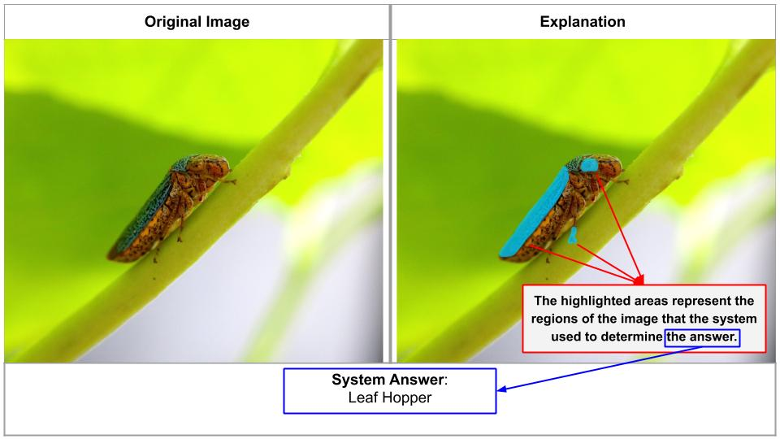

Introduction
We are using an intelligent system to classify arthropods based on a machine learning model. Our system receives an image as input and then labels it as a specific species. The system will then provide two outputs for the image:
- The first output is the classification of the image, which we refer to as the system answer.
- For the second output, the system would highlight the areas in the original image where the algorithm used to determine the answer. We call this output the explanation.
Here is an example of the system's input and outputs:

The original image is shown on the left.
On the bottom of the image, you will see the answer that the system generated for this image.
In other words, in this example, our system classifies the arthropod in the image as a Leaf Hopper.
Here is an example of the system's input and outputs:
On the image on the right, you can see 3 areas are highlighted in light blue. These are the areas that the algorithm used to produce the label. In other words, these areas explain why the system believes the image shows a Leaf Hopper.
Now you understand the system's inputs and outputs...
In this study, you will see a few of these images and outputs (trial). For each trial, you will answer 2 questions:
- whether you find the explanation appropriate based on the system's answer;
- your confidence in correctness of the system's answer.
Don't worry if the image subject is unfamiliar, you can use the explanation to justify your response. Use your best judgement to answer the questions. You might also encounter other questions throughout the trials. Please answer them accordingly.
Here is a summary of your tasks:
For each trial, you should:
- Carefully observe the explanation and the label;
- Answer two questions per image set: We want to know if you believe the highlighted explanation is appropriate with regards to the label, and your confidence with respect to the label.
- answer any other questions you encounter, accordingly.